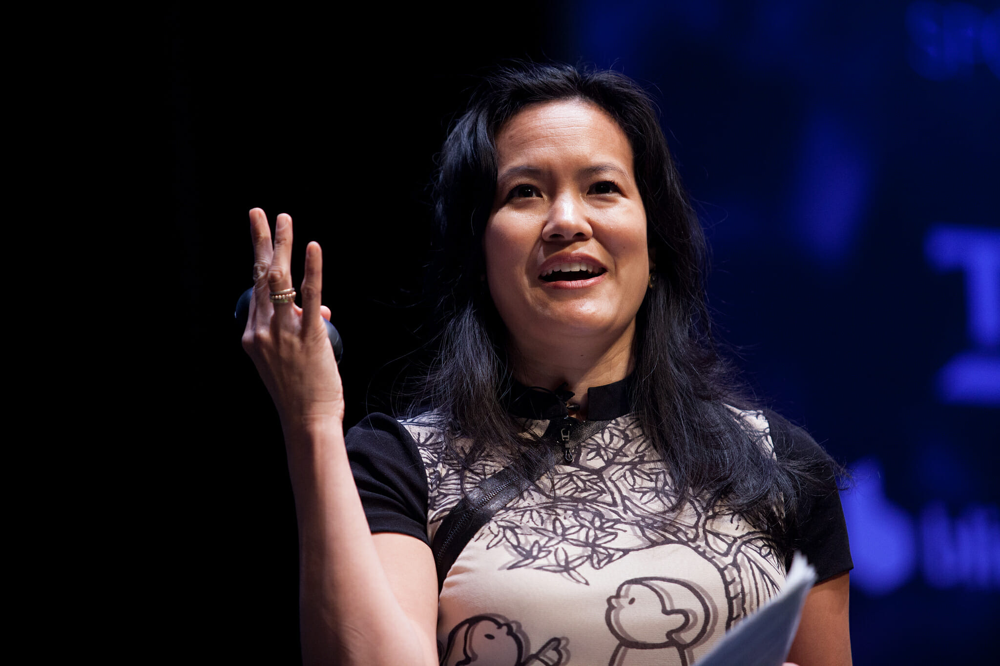

Projeto
User Experience
Pesquisadores
Pesquisadores e autores
Aqui estão grupos ou pessoas que pesquisam, publicam e contribuem para a área de User Experience.
Marc Hassenzahl
— User experience-a research agenda
Kaisa Väänänen
— UX Curve: A method for evaluating long-term user experience

Irene Au
— User Experience at Google – Focus on the user and all else will follow
Rossana Maria de Castro Andrade
— Not the Same Everywhere: Comparing the Scope and Definition of User Experience between the Brazilian and International Communities
David Benyon
— Designing User Experience